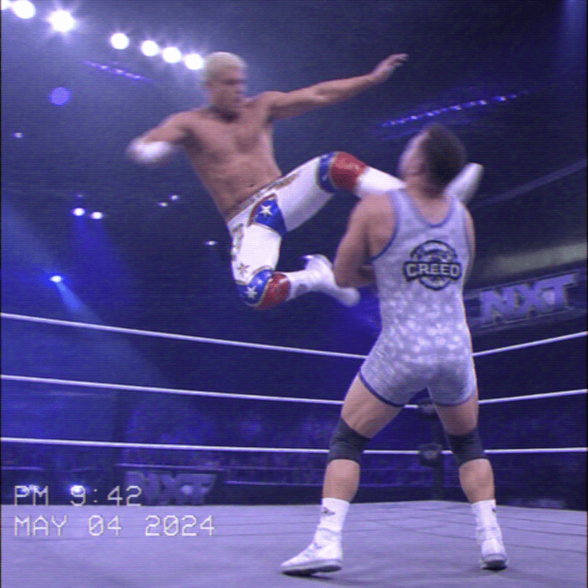

2026/11/10(火)
アベマ・試合結果速報！
○アンドラデ・エル・イドロ (17分45秒 フェーディング・エコー) 辻陽太●
○El Hijo del Vikingo (22分18秒 バイタル・ドロップ) 外道●
○ナタリア (19分32秒 シャープシューター) B-ファブ●
○ネイサン・フレイジャー (15分07秒 フェニックス・スプラッシュ) KONOSUKE TAKESHITA●
○コーディ・ローデス (24分59秒 クロス・ローズ) ブルータス・クリード●
○ジェイク・リー (20分13秒 ダイビング・エルボードロップ) エルトン・プリンス●
○ASUKA (10分30秒 アスカロック) B-ファブ●
○ビアンカ・ベレア (25分00秒 K.O.D.) ティファニー・ストラットン●
○Mini Vikingo (12分44秒 スワントーン・ボム) ジェフ・コブ●
○マスター・ワト (14分56秒 マスター・ロック) ボルチン・オレッグ●
○クルーズ・デル・トロ (18分23秒 フロッグスプラッシュ) KONOSUKE TAKESHITA●
○“Original” El Grande Americano (11分15秒 プラネット・スプラッシュ) チャド・ゲイブル●
○Psycho Clown (16分05秒 コーディング・シグナル) El Grande Americano●
○ザックセイバーJr (19分21秒 ツイスト・オブ・フェイト) モンテス・フォード●
Thank you for Watching !

「(コーディ・ローデス vs ブルータス・クリード)」